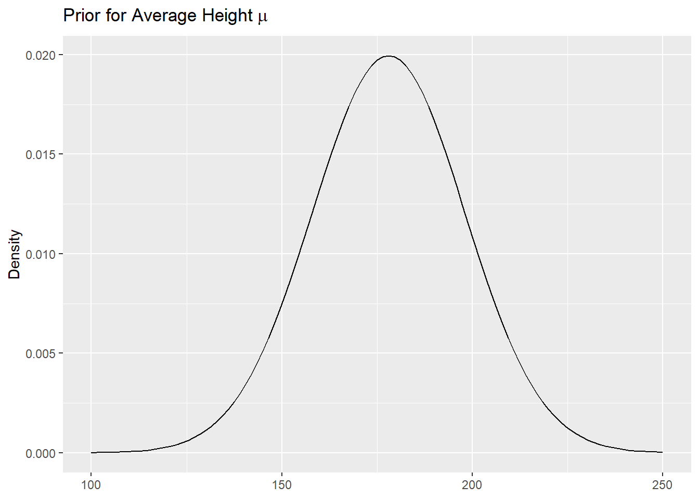
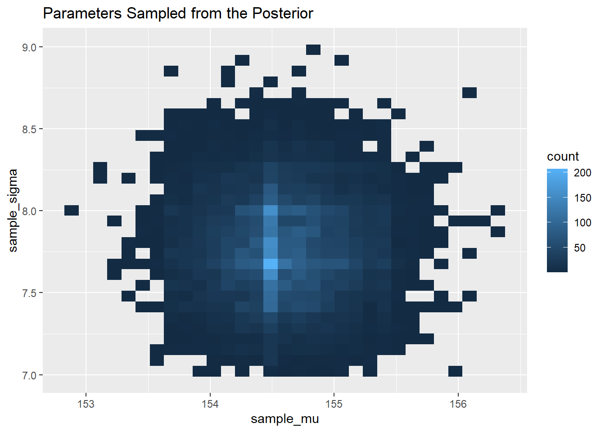
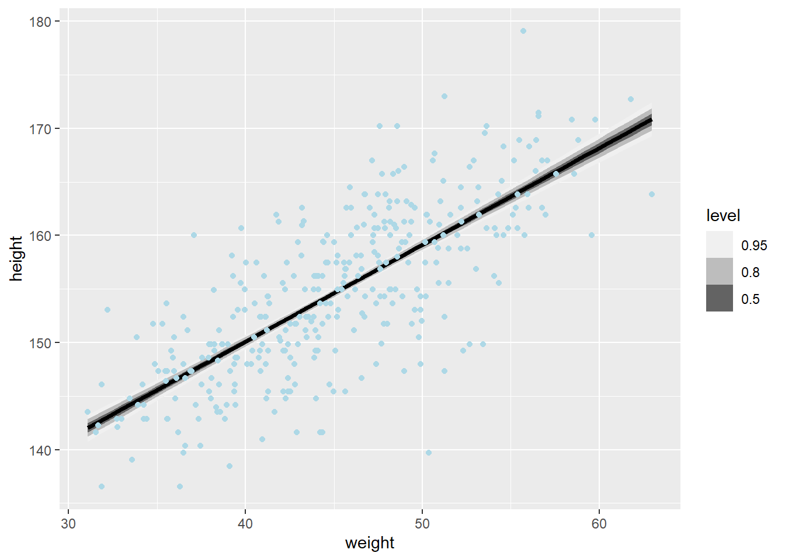
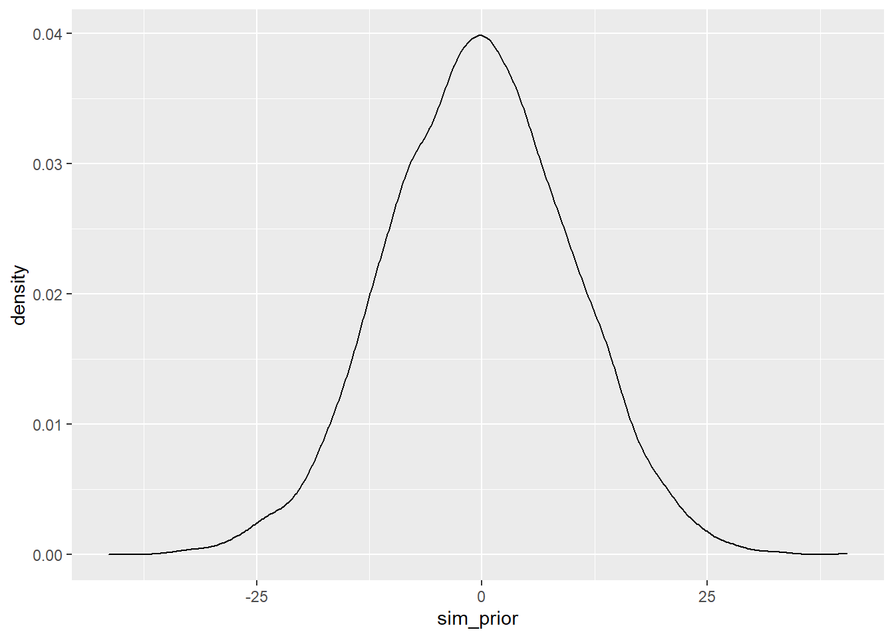

Chapter 4 Geocentric Models
4.1 Chapter Notes
The chapter opens with an analogy between the geocentric model of the solar system and linear regression - both are useful tools to describe certain natural phenomena, but we should be wary about taking the causal structure they imply literally.
The chapter is going to introduce linear regression with uncertainty described using a normal distribution. I.e. models like this:
\[ \begin{aligned} y_i &\sim \text{Normal}(\mu_i, \sigma) \\ \mu_i &= \alpha + \beta x_i \\ \alpha &\sim \text{Normal}(0, 10) \\ \beta &\sim \text{Normal}(0, 1) \\ \sigma &\sim \text{Exponential}(2) \\ \end{aligned} \]
There is a section justifying the use of the normal distribution here by noting how many different ways we might see this pattern in nature - through additive or multiplicative processes. There is also reference to a maximum entropy argument for the normal curve: if all we have are a mean and a variance, the normal distribution is the most appropriate fit with our assumptions.
Maximum entropy arguments are described later on in Chapter 10.
There is then a section on notation, before the chapter introduces the first linear regression model of the book, a model of human height based on some data on the !Kung San collected by Nancy Howell in the 1960s.
data(Howell1)
data_howell <- as_tibble(Howell1)
head(data_howell)## # A tibble: 6 x 4
## height weight age male
## <dbl> <dbl> <dbl> <int>
## 1 152. 47.8 63 1
## 2 140. 36.5 63 0
## 3 137. 31.9 65 0
## 4 157. 53.0 41 1
## 5 145. 41.3 51 0
## 6 164. 63.0 35 1We keep only data on the adult population, and plot the heights:
data_adults <- data_howell %>%
filter(age>=18)
ggplot(data_adults)+
geom_histogram(aes(x=height), bins = 25)Here’s a nice bit about choosing modelling assumptions:
These data look rather Gaussian in shape, as is typical of height data. This may be because height is a sum of many small growth factors. As you saw at the start of the chapter, a distribution of sums tends to converge to a Gaussian distribution. Whatever the reason, adult heights from a single population are nearly always approximately normal.
So it’s reasonable for the moment to adopt the stance that the model should use a Gaussian distribution for the probability distribution of the data. But be careful about choosing the Gaussian distribution only when the plotted outcome variable looks Gaussian to you. Gawking at the raw data, to try to decide how tomodel them, is usually not a good idea. The data could be a mixture of different Gaussian distributions, for example, and in that case you won’t be able to detect the underlying normality just by eyeballing the outcome distribution. Furthermore, as mentioned earlier in this chapter, the empirical distribution needn’t be actually Gaussian in order to justify using a Gaussian probability distribution.
We start building up our model:
\[ h_i \sim \text{Normal}(\mu, \sigma) \] We are assuming here that every one of the 352 adult heights in the data set \(h_i\) can be modelled as if it came from the same normal distribution with mean \(\mu\) and standard deviation \(\sigma\). A box in the chapter explains that this is a epistemological assumption, not one about the physical world. We know for example that height is correlated within family units. In making the assumption that all the heights are independent and identically distributed we are not claiming that these in-family correlations don’t exist, we are only claiming that if we don’t know the correlations, the i.i.d. assumption is a reasonable approximation.
In our model, \(\mu\) and \(\sigma\) are the parameters we want to estimate, but we start off with some priors:
\[ \begin{aligned} \mu &\sim \text{Normal}(178, 20) \\ \sigma &\sim \text{Uniform}(0,50) \end{aligned} \]
The prior for \(\sigma\) here is very flat, and the prior for \(\mu\) is a normal distribution centred on 178cm, with a fairly large standard deviation of 20cm.
Here’s a plot of our prior for the average height parameter \(\mu\):
ggplot()+
xlim(100,250)+
geom_function(fun = dnorm, args = list(mean = 178, sd = 20))+
ylab("Density")+
ggtitle(expression("Prior for Average Height" ~ mu))
Here’s a plot of the prior for the standard deviation \(\sigma\):
ggplot()+
xlim(-10,60)+
geom_function(fun = dunif, args = list(min = 0, max = 50))+
ylab("Density")+
ggtitle(expression("Prior for Standard Deviation" ~ sigma))We now simulate from our priors to see what they imply about height. This is called prior predictive simulation:
sample_mu <- rnorm(1000, mean = 178, sd = 20)
sample_sigma <- runif(1000, min=0, max=50)
sample_height <- rnorm(1000, mean=sample_mu, sd=sample_sigma)
ggplot()+
geom_density(aes(sample_height))+
xlab("Height(cm)")+
ylab("Density")+
ggtitle("Model Expectations Before Seeing the Data")
Most of the probability mass here is in the range of plausible human heights, but some is not. The tallest person ever measured, for example, was Robert Wadlow at 272cm. We could justify tightening up our priors, but in this case we have enough data to overwhelm the priors anyway.
Here is the model, using Bayes’ rule:
\[ \text{Pr}(\mu, \sigma | h) = \frac{\prod_i \text{Normal}(h_i | \mu, \sigma) \text{Normal}(\mu | 178, 20) \text{Uniform}(\sigma |0 ,50) }{\int \int \prod_i \text{Normal}(h_i | \mu, \sigma) \text{Normal}(\mu | 178, 20) \text{Uniform}(\sigma |0 ,50) d\mu d\sigma} \] To get the probability of the parameters given the data, we compute the probability of the parameters on each \(h_i\) and then multiply them all together. This is what the product symbol is doing in the top row.
4.1.1 Model Using Grid Approximation
The chapter then uses grid approximation to get an estimate of the posterior. I think attempting to recreate this will be a useful exercise to understand conceptually the aim of later calculation methods (quadratic approximation and Markov chain Monte Carlo).
# The calculation begins by defining a sequence over the parameter values
# I assume 150 to 160 are chosen because McElreath knows that this range will contain almost all
# of the probability mass for the average height parameter mu
seq_mu <- seq( from=150, to=160 , length.out=100 )
# Similarly for sigma
seq_sigma <- seq( from=7 , to=9 , length.out=100 )
# expand.grid gives essentially the Cartesian product of the two sequences in a data frame
# they each have 100 entries, so the data frame has 100 x 100 = 10,000 rows
post_grid <- as_tibble(expand.grid( mu=seq_mu , sigma=seq_sigma ))
# The code in the chapter then uses sapply to produce the log likelihood.
# I'm going to try to recreate this using purrr.
# For each point in the grid we produce a sum of the log likelihoods of the heights.
# Summing log likelihoods is equivalent to multiplying likelihoods.
# I.e. For each mu and sigma combination, create a vector length 352 (the number of heights in the data set)
# of log likelihoods, sum that vector, and assign it to that point on the grid
post_ll <- post_grid %>%
pmap_dbl(.f = function(mu,sigma){sum(dnorm(data_adults$height,mean=mu, sd = sigma, log = TRUE))})
post_grid <- post_grid %>%
mutate(log_likelihood = post_ll)
# Then weight by the priors by adding the log probability of seeing each mu, sigma combination
post_grid <- post_grid %>%
mutate(product = log_likelihood +
dnorm( post_grid$mu , 178 , 20 , log = TRUE ) +
dunif( post_grid$sigma , 0 , 50 , TRUE ))
# Finally, we normalise by subtracting the maximum product of likelihoods and priors.
# This is equivalent to division because we are still working at the log scale.
# Finally we exponentiate to get to raw probabilities again.
post_grid <- post_grid %>%
mutate(post_prob = exp( product - max(product) ))The only part I don’t get yet is why simply using the maximum of the product works to get us to posterior probabilities. Here’s what the chapter end note says on this:
Finally, the obstacle for getting back on the probability scale is that rounding error is always a threat when moving from log-probability to probability. If you use the obvious approach, like exp( post\(prod ), you’ll get a vector full of zeros, which isn’t very helpful. This is a result of R’s rounding very small probabilities to zero. Remember, in large samples, all unique samples are unlikely. This is why you have to work with log-probability. The code in the box dodges this problem by scaling all of the log-products by the maximum log-product. As a result, the values in post\)prob are not all zero, but they also aren’t exactly probabilities. Instead they are relative posterior probabilities. But that’s good enough for what we wish to do with these values.
Makes sense. We have a list of numbers between 0 and 1 that are correct in proportion to each other, but we don’t have posterior probabilities.
I wonder how we would get the actual posterior probabilities. Why wouldn’t we be able to sum up all of the likelihood-prior products at each grid point and subtract that? Well we don’t have the likelihood-prior products. We have the log versions. And if we try to exponentiate them before scaling they all get set to zero.
head(exp(post_grid$product))## [1] 0 0 0 0 0 0So we need to scale them before exponentaiting but in order to get the correct scaling factor that will return posterior probabilities we need to exponentiate them.
I’m sure there’s a solution to this but for now I’ll continue on using the relative posterior “probabilities” we’ve already calculated. Here’s a glimpse of our posterior probabilities for the paramters mu and sigma:
head(post_grid[,-3:-4])## # A tibble: 6 x 3
## mu sigma post_prob
## <dbl> <dbl> <dbl>
## 1 150 7 1.96e-35
## 2 150. 7 5.35e-34
## 3 150. 7 1.36e-32
## 4 150. 7 3.20e-31
## 5 150. 7 7.00e-30
## 6 151. 7 1.42e-28We sample the mu and sigma parameters from the posterior, sampling each in proportion to it’s posterior probability. Since each posterior probability represents the relative plausibility of the combination of mu and sigma, we shouldn’t sample them independently. We sample a row number using the probabilities in column post_prob and then sample the posterior mu and sigma from that row:
sample_rows <- sample(1:nrow(post_grid),1e4, replace = TRUE, prob = post_grid$post_prob)
sample_mu <- post_grid$mu[sample_rows]
sample_sigma <- post_grid$sigma[sample_rows]
ggplot()+
geom_bin_2d(aes(x=sample_mu,y=sample_sigma), bins=30)+
ggtitle("Parameters Sampled from the Posterior")
4.1.2 Model Using Quadratic Approximation
So that was grid approximation. It was useful to be forced to work through the calculation in detail. The chapter now reproduces this model, this time using quadratic approximation instead. The quap function in the Rethinking package takes a model definition in the form of an alist.
list_height <- alist( #alist(), unlike list(), does not try to evaluate its entries
height ~ dnorm( mu , sigma ) ,
mu ~ dnorm( 178 , 20 ) ,
sigma ~ dunif( 0 , 50 )
)
m4_1 <- quap( list_height , data=data_adults )One of my goals in working through the book in this way is to become familiar with using Stan and tidybayes. The book won’t introduce Markov chain Monte Carlo until later, but I can start working with tidybayes from this point, because the tidybayes.rethinking package works with models created with the Rethinking package, which is where the function quap comes from.
Here’s the rethinking vignette for tidybayes.
From the vignette:
The [tidybayes::]spread_draws() function yields a common format for all model types supported by tidybayes. It lets us instead extract draws into a data frame in tidy format, with a .chain and .iteration column storing the chain and iteration for each row (if available — these columns are NA for rethinking::quap() and rethinking::map() models), a .draw column that uniquely indexes each draw, and the remaining columns corresponding to model variables or variable indices. The spread_draws() function accepts any number of column specifications, which can include names for variables and names for variable indices.
post_quap <- m4_1 %>%
spread_draws(mu,sigma)
head(post_quap,10) # displays the first 10 of 5,000 rows## # A tibble: 10 x 5
## .chain .iteration .draw mu sigma
## <int> <int> <int> <dbl> <dbl>
## 1 NA NA 1 155. 7.77
## 2 NA NA 2 154. 7.86
## 3 NA NA 3 155. 7.77
## 4 NA NA 4 155. 8.03
## 5 NA NA 5 155. 7.83
## 6 NA NA 6 154. 6.97
## 7 NA NA 7 155. 7.33
## 8 NA NA 8 155. 7.17
## 9 NA NA 9 154. 7.73
## 10 NA NA 10 155. 7.65Here’s a summary of the posterior for our parameters using the point and interval summary functions from tidybayes:
set.seed(74)
m4_1 %>%
gather_draws(mu, sigma) %>%
median_qi(.width=0.89)## # A tibble: 2 x 7
## .variable .value .lower .upper .width .point .interval
## <chr> <dbl> <dbl> <dbl> <dbl> <chr> <chr>
## 1 mu 155. 154. 155. 0.89 median qi
## 2 sigma 7.73 7.27 8.20 0.89 median qiHere we return the parameter median in the .value column, and an 89% equi-tailed interval for our two parameters, in the .lower and .higher columns.
We can instead return the mean or mode in the .value column:
set.seed(74)
m4_1 %>%
gather_draws(mu, sigma) %>%
mode_qi(.width=0.89)## # A tibble: 2 x 7
## .variable .value .lower .upper .width .point .interval
## <chr> <dbl> <dbl> <dbl> <dbl> <chr> <chr>
## 1 mu 155. 154. 155. 0.89 mode qi
## 2 sigma 7.72 7.27 8.20 0.89 mode qiThe .value column has changed, but the .lower and .higher columns still specify the same 89% equi-tailed interval.
If we instead want to return the highest density interval we can do that by replacing “qi” in the function with “hdi”:
set.seed(74)
m4_1 %>%
gather_draws(mu, sigma) %>%
median_hdi(.width=0.89)## # A tibble: 2 x 7
## .variable .value .lower .upper .width .point .interval
## <chr> <dbl> <dbl> <dbl> <dbl> <chr> <chr>
## 1 mu 155. 154. 155. 0.89 median hdi
## 2 sigma 7.73 7.27 8.20 0.89 median hdiThe summary function names are really intuitive, but if we don’t want to remember them we can use the point_interval() function only with arguments .point = mean/mode/median and .interval = qi/hdi.
The posterior figures above are those produced by quadratic approximation. This means that they represent Gaussian approximations for the marginal distribution of each parameter. This works fine when the posterior is broadly Gaussian.
Here we compare the results from quap:
m4_1 %>%
gather_draws(mu, sigma) %>%
median_qi(.width=0.89)## # A tibble: 2 x 7
## .variable .value .lower .upper .width .point .interval
## <chr> <dbl> <dbl> <dbl> <dbl> <chr> <chr>
## 1 mu 155. 154. 155. 0.89 median qi
## 2 sigma 7.73 7.26 8.18 0.89 median qiTo the results from grid approximation:
print("mu", quote = FALSE)## [1] muquantile(sample_mu, probs=c(0.055,0.945)) # the lower and upper values of an 89% interval## 5.5% 94.5%
## 153.9394 155.2525print("sigma", quote = FALSE)## [1] sigmaquantile(sample_sigma, probs=c(0.055,0.945))## 5.5% 94.5%
## 7.323232 8.252525These are very close, especially for mu. We would expect this since mu is the outcome of a Gaussian likelihood and prior, whereas sigma was given a uniform prior with lower bound at zero. We might expect then that it would have a longer right tail than the quadratic approximation allows.
4.1.3 Adding Predictors
We are going to use the weights in our data set to predict heights:
ggplot(data_adults)+
geom_point(aes(x=weight, y=height))+
ggtitle("!Kung San Adults")> The strategy is to make the parameter for the mean of a Gaussian distribution, \(\mu\), into a linear function of the predictor variable and other, new parameters that we invent. This strategy is often simply called the linear model. The linear model strategy instructs the golem to assume that the predictor variable has a constant and additive relationship to the mean of the outcome. The golem then computes the posterior distribution of this constant relationship.
Here’s the previous model:
\[ \begin{aligned} h_i &\sim \text{Normal}(\mu, \sigma)\\ \mu &\sim \text{Normal}(178, 20) \\ \sigma &\sim \text{Uniform}(0,50) \end{aligned} \]
And here’s the model including weight as a predictor:
\[ \begin{aligned} h_i &= \text{Normal}(\mu_i, \sigma)\\ \mu_i &= \alpha + \beta(x_i - \bar{x}) \\ \alpha &\sim \text{Normal}(178, 20) \\ \beta &\sim \text{Normal}(0, 10) \\ \sigma &\sim \text{Uniform}(0,50) \end{aligned} \] Where each \(x_i\) is the predictor (weight) associated with each observed height \(h_i\).
We have new parameters \(\alpha\) and \(\beta\). The intercept and slope of our linear model. What do our priors imply about them? We use prior predictive simulation:
# we generate 100 samples from our prior distributions
prior_sim <- tibble(a=rnorm(100, mean = 178, sd=20),
b = rnorm(100, mean = 0, sd = 10))
# we plot the lines they imply
ggplot(prior_sim)+
geom_abline(aes(slope = b,
intercept = a - b*mean(data_adults$weight) ))+ # explained below
xlim(min(data_adults$weight),max(data_adults$weight))+
ylim(-10, 300)+
geom_hline(yintercept = 272, colour = "red")+ # 272cm is Robert Wadlow's height
geom_hline(yintercept = 0, colour = "red")+
xlab("weight (kg)")+
ylab("average height (cm)")+
ggtitle("b ~ Normal(0,10)")For the slope of each line I’ve used the slope we generated from the prior. For the intercept I used
\[ \text{intercept = a - b*mean(weight)} \] The reason for this is that I want the x-axis to vary over a natural range of the parameter weight to be more interpretable. And so instead of considering
\[ \mu_i = \alpha + \beta(x_i - \bar{x}) \] over the range \((\min( x_i) - \bar{x},\max( x_i) - \bar{x})\), I’ve looked at the equivalent line
\[ \mu_i = (\alpha - \beta\bar{x}) + \beta(x_i ) \]
over the range \((\min( x_i),\max( x_i)\).
The plot makes clear that our priors are very permissive. They allow impossible (e.g. negative) heights to be associated with observed weights. Also, just as many lines suggest that height may be negatively correlated with height as suggest a positive correlation.
The chapter also trials the more informative prior
\[ \beta \sim \text{Log-Normal}(0,1) \]
This forces the relationship between weight and height to be positive. It also clusters the range of expected average height more tightly - limiting them for the most part to the range of plausible values. Here’s the same plot as before with the new prior:
# we generate 100 samples from our prior distributions
prior_sim_log <- tibble(a=rnorm(100, mean = 178, sd=20),
b = rlnorm(100, meanlog = 0, sdlog = 1))
# we plot the lines they imply
ggplot(prior_sim_log)+
geom_abline(aes(slope = b,
intercept = a - b*mean(data_adults$weight) ))+ # explained above
xlim(min(data_adults$weight),max(data_adults$weight))+
ylim(-10, 300)+
geom_hline(yintercept = 272, colour = "red")+ # 272cm is Robert Wadlow's height
geom_hline(yintercept = 0, colour = "red")+
xlab("weight (kg)")+
ylab("average height (cm)")+
ggtitle("b ~ Log-Normal(0,1)")Here’s the model we’ll use:
\[ \begin{aligned} h_i &= \text{Normal}(\mu_i, \sigma)\\ \mu_i &= \alpha + \beta(x_i - \bar{x}) \\ \alpha &\sim \text{Normal}(178, 20) \\ \beta &\sim \text{Log-Normal}(0, 1) \\ \sigma &\sim \text{Uniform}(0,50) \end{aligned} \] We feed it to quap and create a table of the parameters using tidybayes:
xbar <- mean(data_adults$weight)
m4_3 <- quap( alist(
height ~ dnorm( mu , sigma ) ,
mu <- a + b*( weight - xbar ) ,
a ~ dnorm( 178 , 20 ) ,
b ~ dlnorm( 0 , 1 ) ,
sigma ~ dunif( 0 , 50 )
) , data= data_adults)
m4_3 %>%
gather_draws(a, b, sigma) %>%
median_qi(.width=0.89)## # A tibble: 3 x 7
## .variable .value .lower .upper .width .point .interval
## <chr> <dbl> <dbl> <dbl> <dbl> <chr> <chr>
## 1 a 155. 154. 155. 0.89 median qi
## 2 b 0.902 0.835 0.969 0.89 median qi
## 3 sigma 5.07 4.76 5.38 0.89 median qiInterpreting these:
- An \(\alpha\) of 154.6cm means that a person of average weight is expected to be 154.6cm tall
- A \(\beta\) of 0.9 means that an increase in weight of 1kg is associated with a increase in height of 0.9cm
We plot draws from the posterior (black lines) over the data (blue dots):
#extract 20 draws from the posterior
post_m4_3 <- m4_3%>%spread_draws(a,b,ndraws = 20)
ggplot()+
geom_point(data=data_adults, aes(x=weight, y=height), colour = "light blue")+
geom_abline(data=post_m4_3,aes(
slope = b,
intercept = a - b*mean(data_adults$weight) ),alpha=0.5)+
ggtitle("Posterior Samples Drawn over the Data")How can we display the uncertainty in our model? In the plot above, I’ve used 20 draws of \(\alpha\) and \(\beta\) to manually plot the expected height over the range of weights seen in the data. There is uncertainty about this mean height, and we can display that by plotting many lines as above, or we can use the following, more flexible approach using tidybayes. This doesn’t require the manual calculation of the \(\mu\)s that is implicit in the code for the graph above. This will be helpful when we move on to more complicated models.
# use modelr::data_grid to create a grid of 51 weights over the range found in the data
data_grid(data_adults,weight=seq_range(weight, n = 51)) %>%
add_linpred_draws(m4_3) %>%# add draws from the posterior link-level predictor - the expected heights
# 5,000 draws x 51 weights = 255,000 rows in this tibble
ggplot(aes(x = weight, y=height)) +
stat_lineribbon(aes(y = .linpred)) +
geom_point(data = data_adults, colour = "light blue") +
scale_fill_brewer(palette = "Greys") The shaded regions display the uncertainty in the expected heights for each weight.
However this is not the only source of uncertainty in our model. We also have uncertainty around the mean heights, represented by \(\sigma\) in the model specification:
\[ h_i = \text{Normal}(\mu_i, \sigma) \] We can display this in a similar way:
data_grid(data_adults,weight=seq_range(weight, n = 51)) %>%
add_predicted_draws(m4_3) %>%# add draws from the posterior predictive - the posterior distribution of heights
ggplot(aes(x = weight, y=height)) +
stat_lineribbon(aes(y = .prediction)) +
geom_point(data = data_adults, colour = "light blue") +
scale_fill_brewer(palette = "Greys")
There is a lot more uncertainty here. The key difference in the above two chunks of code is which tidybayes function is used to create the draws, linpred_draws() or predicted_draws(). The function linpred_draws() draws from the posterior distribution of the linear predictor. I.e. it draws from the distribution of expected heights in the model. Whereas predicted_draws() draws from the entire posterior distribution.
To do the same with Stan models later, we’ll need to use the tidybayes function add_draws() along with rstantools functions like posterior_epred() and posterior_predict().
4.1.4 Polynomial Regression
Here’s a model from the chapter that uses a quadratic link function. It is used to fit the height on weight model over the whole dataset, not just the adults:
\[ \begin{aligned} h_i &= \text{Normal}(\mu_i, \sigma)\\ \mu_i &= \alpha + \beta_1x_i + \beta_1x_i^2\\ \alpha &\sim \text{Normal}(178, 20) \\ \beta_1 &\sim \text{Log-Normal}(0, 1) \\ \beta_2 &\sim \text{Normal}(0, 1) \\ \sigma &\sim \text{Uniform}(0,50) \end{aligned} \]
data_howell <- data_howell%>%
mutate(weight_s = (weight - mean(weight))/sd(weight),
weight_s2 = weight_s^2)
m4_5 <- quap(
alist(
height ~ dnorm( mu , sigma ) ,
mu <- a + b1*weight_s + b2*weight_s2 ,
a ~ dnorm( 178 , 20 ) ,
b1 ~ dlnorm( 0 , 1 ) ,
b2 ~ dnorm( 0 , 1 ) ,
sigma ~ dunif( 0 , 50 )
) , data=data_howell )
m4_5 %>%
gather_draws(a, b1, b2, sigma) %>%
median_qi(.width=0.89)## # A tibble: 4 x 7
## .variable .value .lower .upper .width .point .interval
## <chr> <dbl> <dbl> <dbl> <dbl> <chr> <chr>
## 1 a 146. 145. 147. 0.89 median qi
## 2 b1 21.7 21.3 22.2 0.89 median qi
## 3 b2 -7.81 -8.24 -7.37 0.89 median qi
## 4 sigma 5.77 5.49 6.06 0.89 median qiHere’s a plot of draws from the posterior:
data_grid(data_howell,weight_s=seq_range(weight_s, n = 51)) %>% # grid of standardised weights to range over
mutate(weight_s2 = weight_s^2)%>% # the add_predicted_draws() function expects both weight_s and weight_s2
add_predicted_draws(m4_5) %>%
mutate(weight = weight_s * sd(data_howell$weight) + mean(data_howell$weight) )%>% # reversing the standardisation
ggplot(aes(x = weight, y=height)) +
stat_lineribbon(aes(y = .prediction)) +
geom_point(data = data_howell, colour = "light blue") +
scale_fill_brewer(palette = "Greys")4.1.5 B-Splines
The “B” stands for “basis.”
Here’s the data for the cherry blossom example used in this section:
data(cherry_blossoms)
data_blossoms <- as_tibble(cherry_blossoms)%>%
filter(is.na(doy)==FALSE)Creating knots for the splines:
num_knots <- 15 # number of knots
knot_list <- quantile(data_blossoms$year , probs=seq(0,1,length.out=num_knots) )Constructing the basis functions for a cubic spline using the splines package:
basis <- bs(data_blossoms$year, knots=knot_list[-c(1,num_knots)] , # function for generating the basis matrix
degree=3 , intercept=TRUE ) # we don't want this as a tibble. We'll do matrix multiplication with it later on.Here’s the model for the day in the year when the cherry blossoms appear over time:
\[ \begin{aligned} D &= \text{Normal}(\mu_i, \sigma)\\ \mu_i &= \alpha + \sum^K_{k=1}w_kB_{k,i}\\ \alpha &\sim \text{Normal}(100, 10) \\ w_j &\sim \text{Normal}(0, 10) \\ \sigma &\sim \text{Exponential}(1) \end{aligned} \] A description from the chapter:
That linear model might look weird. But all it is doing is multiplying each basis value by a corresponding parameter wk and then adding up all K of those products. This is just a compact way of writing a linear model. The rest should be familiar.
Using the quap engine:
m4_7 <- quap(
alist(
D ~ dnorm( mu , sigma ) ,
mu <- a + B %*% w ,
a ~ dnorm(100,10),
w ~ dnorm(0,10),
sigma ~ dexp(1)
), data=list( D=data_blossoms$doy , B=basis ) ,
start=list( w=rep( 0 , ncol(basis) ) ) )I’m not familiar enough with tidybayes yet to figure out how to get draws out of this model. I could use the tools in the rethinking package, but these wouldn’t transfer as well to the Stan models later in the book. Will revisit this once I know tidybayes better.
4.2 Questions
4E1
Question
In the model definition below, which line is the likelihood?
\[ \begin{aligned} y_i &\sim \text{Normal}(\mu, \sigma) \\ \mu &\sim \text{Normal}(0, 10) \\ \sigma &\sim \text{Exponential}(1) \end{aligned} \]
Answer
\(y_i ∼ \text{Normal}(µ, σ)\)
4E2
Question
In the model definition just above, how many parameters are in the posterior distribution?
Answer
Two parameters, \(\mu\) & \(\sigma\). \(y_i\) is not a parameter, it’s the observed data.
4E3
Question
Using the model definition above, write down the appropriate form of Bayes’ theorem that includes the proper likelihood and priors.
Answer
In Bayes’ theorem, we want to end up with the probability of some hypothesis, given some data. In this case, our hypotheses are values for parameters \(\mu\) and \(\sigma\). The probability of seeing the data (\(y_i\)) that we do comes from our likelihood, in this case we’ve assumed the data is the result of a normal distribution. Let’s say we want to find the probability that our parameter values are \(\hat\mu\) and \(\hat\sigma\) given some piece of data \(y_i\). We apply Bayes’ theorem like this:
\[ \begin{aligned} P(\hat\mu,\hat\sigma | y_i) &= \frac{P(y_i | \hat\mu, \hat\sigma)P(\hat\mu)P(\hat\sigma)}{\int\int P(y_i | \mu, \sigma)P(\mu)P(\sigma) d\mu d\sigma} \\ \\ &= \frac{N(y_i | \hat\mu, \hat\sigma)N(\hat\mu | 0,10)\text{Exp}(\hat\sigma|1)}{\int\int N(y_i | \mu, \sigma)N(\mu | 0,10)\text{Exp}(\sigma|1) d\mu d\sigma} \end{aligned} \]
I mean \(N(y_i | \mu, \sigma)\) to be read “the probability of observing \(y_i\) given that it is normally distributed with parameters \(\mu\) & \(\sigma\). That notation is copied from page 78.
4E4
Question
In the model definition below, which line is the linear model?
\[ \begin{aligned} y_i &\sim \text{Normal}(\mu, \sigma) \\ \mu_i &= \alpha + \beta x_i \\ \alpha &\sim \text{Normal}(0, 10) \\ \beta &\sim \text{Normal}(0, 1) \\ \sigma &\sim \text{Exponential}(2) \\ \end{aligned} \]
Answer
\(\mu_i = \alpha + \beta x_i\)
This is the assertion that \(\mu_i\) is a linear function of \(x_i\).
4E5
Question
In the model definition just above, how many parameters are in the posterior distribution?
Answer
Three parameters, \(\alpha\), \(\beta\) & \(\sigma\).
4M1
Question
For the model definition below, simulate observed \(y\) values from the prior (not the posterior).
\[ \begin{aligned} y_i &\sim \text{Normal}(\mu, \sigma) \\ \mu &\sim \text{Normal}(0, 10) \\ \sigma &\sim \text{Exponential}(1) \\ \end{aligned} \]
Answer
num_obs <- 1e4
sim_prior <- rnorm(num_obs,
mean=rnorm(num_obs, mean=0, sd = 10) ,
sd=rexp(num_obs, rate = 1))
ggplot()+
geom_density(aes(x=sim_prior))
4M2
Question
Translate the model just above into a quap formula.
Answer
y ~ dnorm(mu, sigma) mu ~ dnorm(0, 10) sigma ~ dexp(1)
4M3
Question
Translate the quap model formula below into a mathematical model definition.
y ~ dnorm( mu , sigma ),
mu <- a + b*x,
a ~ dnorm( 0 , 10 ), . b ~ dunif( 0 , 1 ),
sigma ~ dexp( 1 )
4.2.0.1 Answer
\[ \begin{aligned} y_i &\sim \text{Normal}(\mu, \sigma) \\ \mu_i &= \alpha + \beta x_i\\ \alpha &\sim \text{Normal}(0, 10) \\ \beta & \sim \text{Uniform}(0,1) \\ \sigma & \sim \text{Exponential}(1) \end{aligned} \]
4M4
Question
A sample of students is measured for height each year for 3 years. After the third year, you want to fit a linear regression predicting height using year as a predictor.
Write down the mathematical model definition for this regression, using any variable names and priors you choose. Be prepared to defend your choice of priors.
Answer
hi ∼ Normal(µ, σ)
µi = α + βyi
α ~ Normal(178, 20)
β ∼ Normal(0,10)
σ ∼ Exponential(0.05)
4M5
Question
Now suppose I remind you that every student got taller each year. Does this information lead you to change your choice of priors? How?
Answer
Yes, I would revise β to something like β ∼ Exponential(0.2).
Now it can only be positive (before I wasn’t sure if we were following the same students, or the same class with a new intake of students).
Probably still anticipating too much height growth with this prior, assuming these are university students. On the other hand Dennis Rodman grew like 8 inches one summer after high school apparently so want to keep open the possibility.
4M6
Question
Now suppose I tell you that the variance among heights for students of the same age is never more than 64cm. How does this lead you to revise your priors?
Answer
I think my previous prior σ ∼ Exponential(0.05) is probably still fine. If anything this question makes me think I wasn’t being conservative enough with my first choice of priors.
4M7
Question
Refit model m4.3 from the chapter, but omit the mean weight xbar this time. Compare the new model’s posterior to that of the original model. In particular, look at the covariance among the parameters. What is different? Then compare the posterior predictions of both models.
Answer
data(Howell1)
d <- Howell1
d2 <- d[ d$age >= 18 , ]
# define the average weight, x-bar
xbar <- mean(d2$weight)
# fit model
set.seed(100)
m4.3 <- quap( alist(
height ~ dnorm( mu , sigma ) ,
mu <- a + b*( weight - xbar ) ,
a ~ dnorm( 178 , 20 ) ,
b ~ dlnorm( 0 , 1 ) ,
sigma ~ dunif( 0 , 50 )
) ,
data=d2 )
set.seed(100)
m4.3.2 <- quap( alist(
height ~ dnorm( mu , sigma ) ,
mu <- a + b*( weight ) ,
a ~ dnorm( 178 , 20 ) ,
b ~ dlnorm( 0 , 1 ) ,
sigma ~ dunif( 0 , 50 )
) ,
data=d2 )Chapter questions unfinished.
Further Reading
This is the first chapter that really refers to E. T. Jaynes in detail. I really want to read Probability Theory: The Logic of Science. I’m not sure how mathematically dense it is but will maybe hold off until summer, once I’ve seen some measure theory and worked through MacKay’s book on information theory.